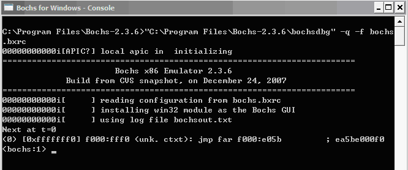
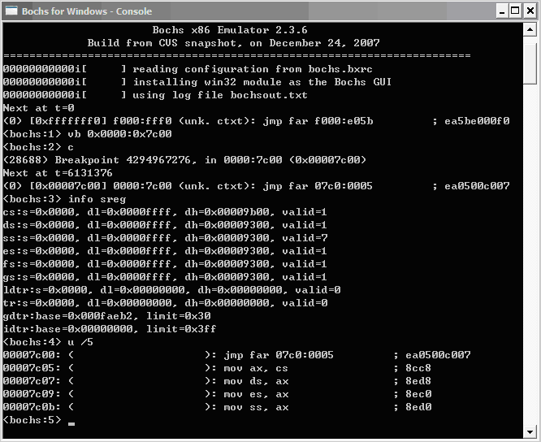

2. Bochs 手册¶
2.1. 调试汇编代码¶
用 Bochs 在汇编级调试操作系统很简单，只需要运行 dbg-asm ，然后就得到了如下图所示的调试界面。

图1 Bochs调试操作系统的界面
此时是暂停在 BIOS 中。而我们的代码是从 0x7C00 位置开始的，所以先要在那里设一个断点，然后继续运行到断点：
break 0x7c00
continue
(0) Breakpoint 1, 0x00007c00 in ?? ()
Next at t=4967728
(0) [0x00007c00] 0000:7c00 (unk. ctxt): mov ax, 0x07c0 ; b8c007
接下来可以用命令 help 来查看调试系统的各种基本命令，这里给出了一些常用的命令
2.2. 执行控制指令¶
指令 |
含义 |
|---|---|
c/cont/continue |
连续执行 |
s/step/stepi [count] |
执行count条指令，默认为1条，会跟进到函数和中断调用的内部 |
p/n/next [count] |
执行count条指令，默认为1条，但跳过函数和中断调用 |
Ctrl+C |
停止执行，并回到命令行提示符下 |
q/quit/exit |
退出调试和执行 |
2.3. 断点设置命令¶
指令 |
含义 |
|---|---|
vb/vbreak seg:offset |
在虚拟地址上设置指令断点，其中seg和offset可以是以0x开始的十六进制数，或十进制，或者是以0开头的八进制数 |
lb/lbreak addr |
在线性地址上设置断点，addr同上面的seg和offset |
b/break/pb/pbreak addr |
在物理地址上设置断点 |
info break |
显示当前所有断点的信息 |
d/del/delete n |
删除一个断点 |
2.4. 内存操作指令¶
指令 |
含义 |
|---|---|
x /nuf addr |
检查位于线性地址addr处的内存内容 |
xp /nuf addr |
检查位于物理地址addr处的内存内容 |
其中参数 n 、 u 、 f 分别表示：
n 为要显示内存单元的计数值，默认为 1
u 表示单元大小，默认值为 w
- b（bytes）
1字节
- h（halfwords）
2字节
- w（words）
4字节
- g（giantwords）
8字节
f 为显示格式，默认为 x
- x（hex）
显示为十六进制数
- d（decimal）
显示为十进制数
- u（unsigned）
显示为无符号十进制数
- o（octal）
显示为八进制数
- t（binary）
显示为二进制数
- c（char）
显示为对应的字符
2.5. 信息显示和CPU寄存器操作命令¶
指令 |
含义 |
|---|---|
u/disasm/disassemble start end |
反汇编给定线性地址范围的指令。也可以是u /10 反汇编从当前地址开始的10条指令。 |
如下图

图2 用Bochs调试操作系统